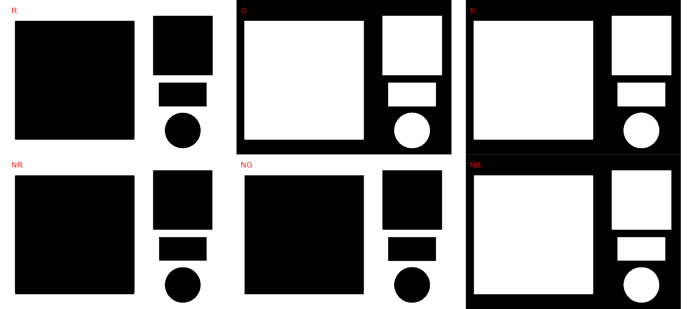
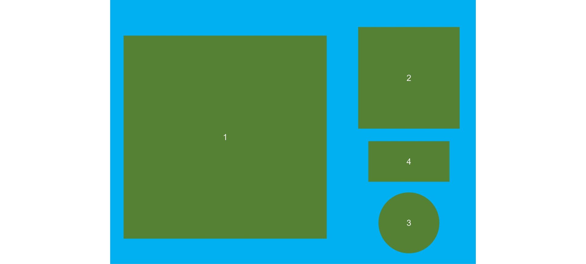
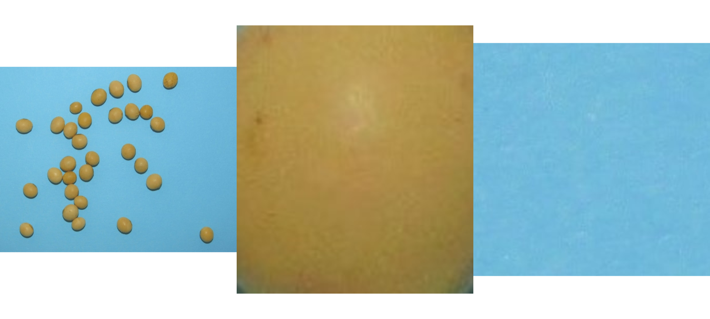
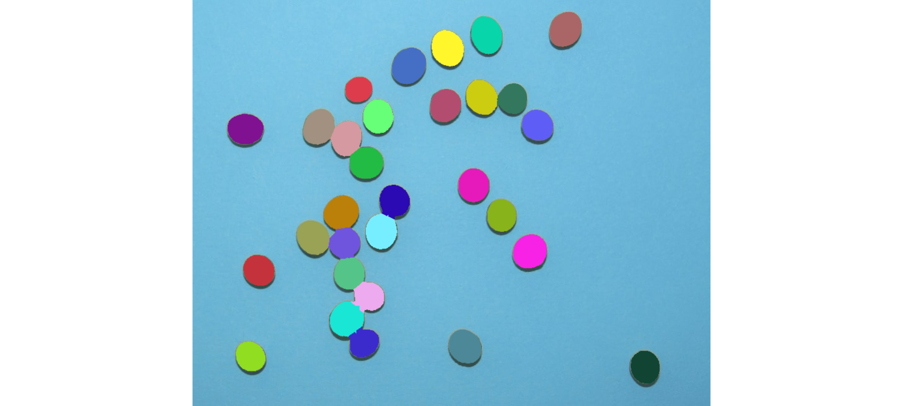
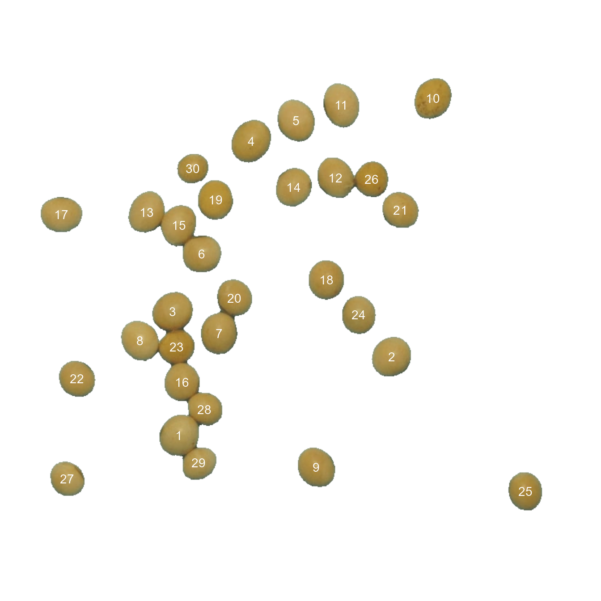
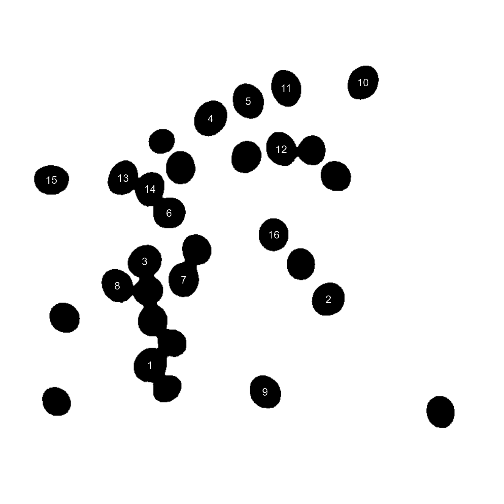
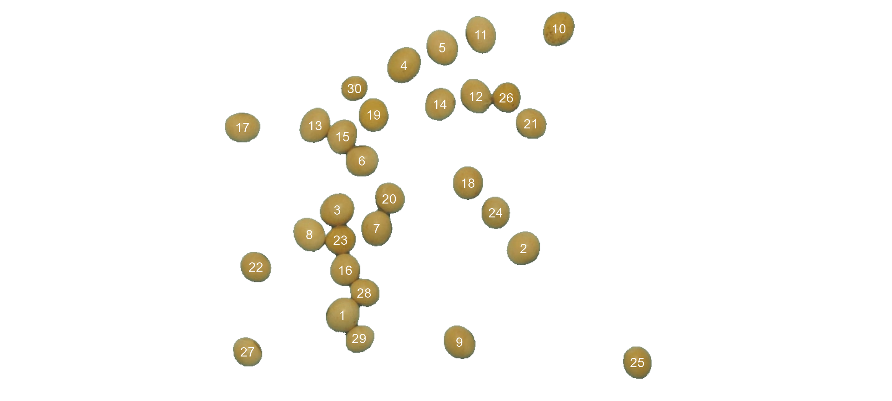
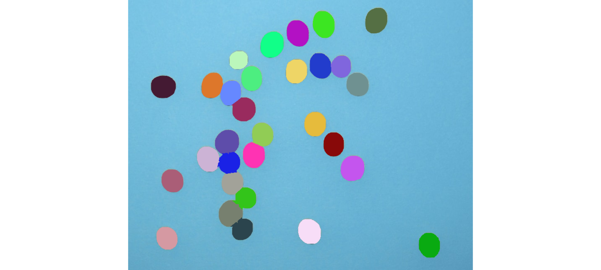

count_objects.RmdThe function count_objects() can be used to count objects in an image. Let us start with a simple example with the image object_300dpi.png available in the GitHub page. To facilitate the image importation from this folder, a helper function image_pliman() is used.
library(pliman)
#> |========================================================|
#> | Tools for Plant Image Analysis (pliman) v0.1.0 |
#> | Author: Tiago Olivoto |
#> | Type 'vignette('pliman_start')' for a short tutorial |
#> | Visit 'https://bit.ly/2RP2kyE' for a complete tutorial |
#> |========================================================|
img <- image_import(image_pliman("objects_300dpi.jpg"))
image_show(img)The above image was produced with Microsoft PowerPoint. It has a known resolution of 300 dpi (dots per inch) and shows four objects
To count the objects in the image we use count_objects() and inform the image object (the only mandatory argument). First, we use image_binary() to see the most suitable index to segment the objects from the background. By default, the R, G, B (first row) and their normalized values (second row) are used.
image_binary(img)
img_res <-
count_objects(img,
index = "B") # use blue index to segment#>
#> --------------------------------------------
#> Number of objects: 4
#> --------------------------------------------
#> statistics area perimeter
#> min 98363.0 1030.000
#> mean 488297.5 2378.000
#> max 1394754.0 4715.000
#> sd 615160.4 1655.097
#> sum 1953190.0 9512.000The results were stored in img_res and a summary print in the console. The minimum, mean, maximum, standard deviation and sum of pixels are given for both area and perimeter. The values for each object can be obtained with get_measures(). Since there is no scale declared in the above example, we have no idea about the actual area of the objects in cm2, only in pixels.
(measures <- get_measures(img_res))
#> id x y area perimeter radius_mean radius_min radius_max
#> 1 1 668.9996 797.9996 1394754 4715 677.0314 589.8749 833.6795
#> 2 2 1737.5000 453.0000 348690 2358 338.3123 294.5000 416.8396
#> 3 3 1737.5482 1296.3454 98363 1030 176.4897 174.8776 177.8908
#> 4 4 1737.4979 939.4926 111383 1409 197.4469 117.4128 262.9966
image_show(img)
plot_measures(measures) # plot the object id
There are two main ways of adjusting the object measures (from pixels to cm, for example). The first one is to declare the known area, perimeter, or radius of a given object. The measure for the other objects will be then computed by a simple rule of three. The second one is by declaring a known image resolution in dpi (dots per inch). In this case, the perimeter, area, and radius will be adjusted by the informed dpi.
Since we have known the area of the larger square (object 1), let us adjust the area of the other objects in the image using that.
get_measures(img_res,
id = 1,
area ~ 100)
#> -----------------------------------------
#> measures corrected with:
#> object id: 1
#> area: 100
#> -----------------------------------------
#> id x y area perimeter radius_mean radius_min radius_max
#> 1 1 668.9996 797.9996 100.000000 39.923894 5.732711 4.9947194 7.059116
#> 2 2 1737.5000 453.0000 25.000108 19.966181 2.864633 2.4936557 3.529557
#> 3 3 1737.5482 1296.3454 7.052355 8.721444 1.494413 1.4807620 1.506276
#> 4 4 1737.4979 939.4926 7.985853 11.930597 1.671866 0.9941839 2.226903The same can be used to adjust the measures based on the perimeter or radius. Let us adjust the perimeter of objects by the perimeter of object 2 (20 cm).
get_measures(img_res,
id = 2,
perimeter ~ 20)
#> -----------------------------------------
#> measures corrected with:
#> object id: 2
#> perimeter: 20
#> -----------------------------------------
#> id x y area perimeter radius_mean radius_min radius_max
#> 1 1 668.9996 797.9996 100.339055 39.991518 5.742421 5.0031796 7.071073
#> 2 2 1737.5000 453.0000 25.084872 20.000000 2.869485 2.4978796 3.535535
#> 3 3 1737.5482 1296.3454 7.076266 8.736217 1.496944 1.4832701 1.508828
#> 4 4 1737.4979 939.4926 8.012929 11.950806 1.674698 0.9958679 2.230675If the image resolution is known, all the measures will be adjusted according to this resolution. Let us to see a numerical example with pixels_to_cm(). This function converts the number of pixels (\(px\)) to cm, considering the image resolution in \(dpi\), as follows: \(cm = px \times (2.54/dpi)\). We have known that the larger square has a perimeter of 4720 pixels. So, using the function we have
pixels_to_cm(px = 4720, dpi = 300)
#> [1] 39.96267The perimeter of object 1 adjusted by the image resolution is very close to the true (40 cm). Bellow, the values of all measures are adjusted by declaring the dpi argument in get_measures().
get_measures(img_res, dpi = 300)
#> id x y area perimeter radius_mean radius_min radius_max
#> 1 1 668.9996 797.9996 99.982166 39.920333 5.732200 4.9942740 7.058487
#> 2 2 1737.5000 453.0000 24.995649 19.964400 2.864377 2.4934333 3.529242
#> 3 3 1737.5482 1296.3454 7.051097 8.720667 1.494279 1.4806299 1.506142
#> 4 4 1737.4979 939.4926 7.984428 11.929533 1.671717 0.9940952 2.226705Here, we will count the grains in the image soybean_touch.png. This image has a cyan background and contains 50 soybean grains that don’t touch with each other. Two segmentation strategies are used. The first one is by using is image segmentation based on color indexes.
soy <- image_import(image_pliman("soybean_touch.jpg"))
grain <- image_import(image_pliman("soybean_grain.jpg"))
background <- image_import(image_pliman("background.jpg"))
image_combine(soy, grain, background, ncol = 3)
The function count_objects() segment the image using as default the normalized blue index, as follows \(NB = (B/(R+G+B))\), where \(R\), \(G\), and \(B\) are the red, green, and blue bands. Objects are count and the segmented objects are colored with random permutations.
count <-
count_objects(soy,
index = "NB") # default
#>
#> --------------------------------------------
#> Number of objects: 30
#> --------------------------------------------
#> statistics area perimeter
#> min 1366.0000 117.000000
#> mean 2057.3667 146.600000
#> max 2445.0000 158.000000
#> sd 230.5574 8.406073
#> sum 61721.0000 4398.000000Users can remove the random coloration and identify the objects (in this example the grains) by using the arguments marker = "text" and show_segmentation = FALSE. The color of the background can also be changed with col_background.
count <-
count_objects(soy,
marker = "text",
show_segmentation = FALSE,
col_background = "white",
index = "NB") # default
#>
#> --------------------------------------------
#> Number of objects: 30
#> --------------------------------------------
#> statistics area perimeter
#> min 1366.0000 117.000000
#> mean 2057.3667 146.600000
#> max 2445.0000 158.000000
#> sd 230.5574 8.406073
#> sum 61721.0000 4398.000000
# Get the object measures
(measures <- get_measures(count))
#> id x y area perimeter radius_mean radius_min radius_max
#> 1 1 245.83333 509.84077 2286 158 26.54285 22.76306 28.94132
#> 2 2 538.05611 401.89604 2299 153 26.60716 24.95688 28.40020
#> 3 3 237.59170 339.82483 2312 152 26.69878 23.96521 29.04402
#> 4 4 345.35665 105.78323 2445 158 27.51343 24.68250 30.47116
#> 5 5 406.93136 77.54909 2302 153 26.64891 23.96546 29.63586
#> 6 6 277.44521 260.55941 2163 149 25.76600 24.29055 27.88707
#> 7 7 301.20568 370.09157 2217 154 26.11345 23.59087 28.68747
#> 8 8 192.82827 379.64522 2207 149 26.10523 23.71544 28.85848
#> 9 9 434.71021 553.70653 2174 148 25.89026 23.74971 28.50595
#> 10 10 594.74403 47.31095 2219 153 26.16024 23.35200 29.65932
#> 11 11 468.99698 56.42549 2315 155 26.76542 23.03064 30.78003
#> 12 12 461.17241 156.02713 2175 148 25.93324 23.07091 29.51196
#> 13 13 202.07541 203.46115 2188 153 26.00756 22.48701 29.80797
#> 14 14 403.48649 169.01474 2035 143 25.01919 22.39798 27.00994
#> 15 15 245.98677 221.37506 2117 148 25.52815 21.95011 29.11295
#> 16 16 250.40020 436.93432 1964 142 24.55216 22.97147 26.25762
#> 17 17 84.67109 206.43152 2183 151 25.92309 22.82494 28.74282
#> 18 18 448.41151 296.20890 2068 145 25.19611 23.35700 27.03161
#> 19 19 296.17753 186.50535 2056 144 25.13231 22.63931 27.21284
#> 20 20 321.97321 321.69110 1978 151 24.63527 21.22252 27.36964
#> 21 21 550.20165 200.50645 1939 141 24.39962 22.57787 26.35292
#> 22 22 106.29396 432.08949 1922 140 24.30404 22.83775 26.26388
#> 23 23 242.94029 388.54309 1926 146 24.39053 22.41236 27.41985
#> 24 24 492.98784 344.44104 1891 139 24.07625 21.89427 25.98781
#> 25 25 721.70496 586.34204 1915 140 24.24984 21.88597 26.81782
#> 26 26 510.46838 158.37213 1787 137 23.46584 21.17273 26.18003
#> 27 27 92.83821 569.39472 1743 134 23.12420 21.24944 25.33156
#> 28 28 281.03738 474.07147 1819 154 23.48401 17.88658 27.20260
#> 29 29 273.27251 547.45906 1710 143 22.78041 17.61722 25.90980
#> 30 30 265.29209 143.41142 1366 117 20.40475 18.59025 22.03007In the following example, we will select objects with an area above the average of all objects by using lower_size = 2057.36. Additionally, we will use the argument show_original = FALSE to show the results as colors (non-original image).
count_objects(soy,
marker = "text",
show_original = FALSE,
show_segmentation = FALSE,
lower_size = 2057.36,
index = "NB") # default
#>
#> --------------------------------------------
#> Number of objects: 16
#> --------------------------------------------
#> statistics area perimeter
#> min 2068.00000 145.00000
#> mean 2229.37500 151.68750
#> max 2445.00000 158.00000
#> sd 92.26908 3.68273
#> sum 35670.00000 2427.00000Users can also select the top n objects based on either smaller or largest areas. Let’s see how to point out the 5 grains with the smallest area, showing the original grains in a blue background. We will also use the argument my_index to choose a personalized index to segment the image. Just for comparison, we will set up explicitly the normalized blue index by calling my_index = "B/(R+G+B)".
count_objects(soy,
marker = "point",
show_segmentation = FALSE,
topn_lower = 5,
col_background = "blue",
my_index = "B/(R+G+B)") # default
#>
#> --------------------------------------------
#> Number of objects: 5
#> --------------------------------------------
#> statistics area perimeter
#> min 1366.0000 117.00000
#> mean 1685.0000 137.00000
#> max 1819.0000 154.00000
#> sd 183.1052 13.54622
#> sum 8425.0000 685.00000Sometimes it is difficult to choose an image index that segments the image efficiently (even using my_index ). In pliman users have an alternative image segmentation strategy that is using sample color palettes. In this case, users can say to count_objects which color palettes are to be used for background and foreground. A generalized linear model (binomial family) is then used to predict the value of each pixel (background or foreground). Let’s see how the grains of the above image can be counted with this strategy.
count_objects(img = soy,
background = background,
foreground = grain)
#>
#> --------------------------------------------
#> Number of objects: 30
#> --------------------------------------------
#> statistics area perimeter
#> min 1570.0000 128.000000
#> mean 2386.7667 159.266667
#> max 2785.0000 171.000000
#> sd 260.0185 8.815869
#> sum 71603.0000 4778.000000Provided that the images are stored in the current working directory (or subdirectory), users can count the objects with no need to first import the image into the R environment. In this case, image names need to be declared as characters. Assuming that soy, background, and grain are the images saved into the current working directory, the same result as above is obtained with
count_objects(img = "soy",
background = "background",
foreground = "grain")In plant image analysis, frequently it is necessary to process more than one image. For example, in plant breeding, the number of grains per plant (e.g., wheat) is frequently used in the indirect selection of high-yielding plants. In pliman, batch processing can be done when the user declares the argument img_pattern.
The following example would be used to count the objects in the images with a pattern name "trat" (e.g., "trat1", "trat2", "tratn") saved into the subfolder "originals" in the current working directory. The processed images will be saved into the subfolder "processed". The object list_res will be a list with two objects (results and statistics) for each image.
To speed up the processing time, especially for a large number of images, the argument parallel = TRUE can be used. In this case, the images are processed asynchronously (in parallel) in separate R sessions running in the background on the same machine. The number of sections is set up to 90% of available cores. This number can be controlled explicitly with the argument workers.
list_res <-
count_objects(img_pattern = "trat", # matches the name pattern in 'originals' subfolder
dir_original = "originals",
dir_processed = "processed",
parallel = TRUE, # parallel processing
workers = 8, # 8 multiple sections
save_image = TRUE)